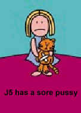

|
|
|
Wayback Machine links
http://www.tfc-central.co.uk/
Q3F spin-off - vYv (very Young virgins)
Another sodding TFC avi...
Blah...
How did you end up in TPC?
Slog saw me playing. I wanted to join a clan. TPC was just forming. QED. (May 99) Having Downloaded TFC of the night of its release, and then loving being a demo in CZ2 and pissing people of as a Pyro I decided to join a clan. Looking through the WPTFC message board came up with a post by Badger about a new clan called TPC. I Had a trial the day later with Slog on some crappy Map I never ever played before and I just about managed to impress him by burning him many times =) Originally got into online gaming via quake and quakeworld thru gamespy. Started playing HL firstly on the net again thru gamespy, downloaded TFC as soon as it came out and was hooked. Did not try it on wireplay until the day it became free! When TPC first started recruiting I thought it would be fun and sent an e-mail to sign up. Luckily slog and badger had already noticed me on the servers and welcomed me aboard without a trial. Its been onward and upward ever since, maturing into a friendly strong well organised clan. I was a keen WP user with racing simulations but wanted a game where I could get regular opposition. I bought Half-Life as my first 3D-shooter and hated it until I discovered TFC. I became a regular WP server player. Many people came online advertising for players but I wanted someone to ask me specifically if I wanted to join. Badger was the first person to ask...and so here I am :o) Scoped for the finest clan to join which also had high quality play! Was keen player of Quake 2 on Wireplay, heard from my mate that Half Life TFC was the shit. Tried it and fell in love. Posted on message board to see if any clans where recruiting - no replies ;o) looked at clan list on Wireplay and found the ThePooCrew site, was inspired by there passion for poo and asked for a trial, and the rest is history. Well, I started playing TFC at a local LAN with some mates. Liked TFC so played it online. Played on loads of net servers and at the time loved hunted as sniper. Stumbled across WP TFC forum and posted a reply to a recruitment message by Badger. Went for a trial and the rest is history.
Glory shots
Ahh memories...
Match logs
08/30/2001 [MDB] well
FraS LAN
Some late drop outs and some late invites, but we got enough together for a good drinking session and some Q3CTF. Final addendance: FraS, Grim, Jonny5, rebs, Ricey, t!mo.
Lack of activity
As you may well know TPC have not been very active over the last few months. We are trying to get active enough again to put in a decent effort in the next WPTFCL. So wake up people!
Fast, furious and friendly
With the imminent start of the restored WPTFCL, the clan machine rumbled and roared back to life with our first friendly of 2002. Sporting a new member, Mad Mada McMad of the clan Mc Adam, TPC clicked on the cruise control and eased out onto the TFC highway
heading towards shutdown2, and promptly ran over clan GF5. Despite their valiant attempts to leap out of the way, we hit them at 130 miles an hour, scattering offensive engy's and Decrepid^Soldiers everywhere. Our frontline defence
directed the oncoming GF5 traffic towards the scrap heap with K1llz excelling himself by racking up an impressive 86...erm kills. The trip to monkey told a similar story but with GF5 grabbing a cap. This was in spite of our def
setting up a roadblock around our flag on the bridge and getting carried away after the instruction to "hold it up a bit" was taken to the extreme. TPC was later convicted
of having an Offence (good) and got 260 points on it's licence. Win vs [GF5] shutdown2 130-0 monkey_l 130-10
We had one the other night and it rocked. Well not quite but it was first time a lot of us have played together for agesss. I wonder when we will actually get a match sorted? lardy da da. Yes I know that picture of RAT is scary but I didn't post it. Well it's time that you all woke up and went and looked at the TPC forums. We are on the lookout for new recruits so get reading and start applying. The ITV digital monkey prize won't be available for too long. Goodbye.
RAT spotted...
...and he's turned into a hippy! finally got around to adding MDB result, we are now officially inactive... we shall review the issue once the Wireplay league are taking sign-ups.
TPC WonID database
To be added to in the future.
TPC wishes everyone the best for the holiday period. We hope you have enjoyed using our servers.
We played MDB yesterday in the BWTFCL div1 semi-final and lost a close match 50-60 Openfire and 20-20 2Fort. A very good game which I enjoyed a lot even though we lost. 2fort was very exciting with some wicked defending keeping the score to 20. SG balc.
Openfire was a shambles but a spirited comeback kept MDB on their toes. Good luck MDB in the final vs LP, make sure you beat that "funny" clan.
Jobabob's latest map creation, another mint pipe jump map. Currently playing 24/7 on TPC server 2 (195.149.21.121:27065).
Monday we played |Gla| in CB ladder, won 2fort on our server 60-20, gg. moved over to their server based in Italy and the lag was horrid, they were always leading so towards end we put some more on def to get win overall which I don't think they liked,
lost Openfire 50-20 (80-70 win overall).
apologies for my shit spelling and grammar... its late.
TPC managed to put in some solid performances this week to beat MDB and CI. I dusted off my rocket launcher and played bsp in both games. Thanks to help from my sidekick Doe at tsp we managed to get some good scores.
TPC win vs MDB 60-10 2fort 80-30 Openfire
TPC are on the lookout for new admins for our servers. The TPC forums hold all the details you need to apply. "Admin Idol" will begin in earnest on the 1st December. If you complete the process succesfully you will be invited to a big showdown with the
judges in the new year. I know the servers have been lagging but it would help me greatly if I could have descriptions of the lag and pictures if possible.
In our last official BW game we beat JAMW 60-30 Sd2 and 170-60 Co2. This means we should come 2nd in our group providing we can sort out the situation with -bd-... Played a friendly last night vs XXX and narrowly lost 20-40 Co2 and 30-40 monkey_l. TPC
paused the server on monkey so that they could all rejoin their BC session.
We've been going through a not very activate schedule over the last few weeks and hence lack of updates. BWTFCL is coming to the end of the season and we play JamW tomorrow which should be a decider for 2nd place in our group.
Our apologies to those people using the TPC1 server yesterday evening who witnessed a few minutes of mindless dicking about by someone impersonating our admins and exploiting the Admin Mod. It won't happen again.
Our BWTFCL game this week was versus MI-CSC-RNK and saw our first convincing win of the season. Shutdown2 was first and our offy chaps wasted no time in capping as we raced to a 30-0 start. At this point MCR managed to get our lasers, grab the flag, and
almost made it to the front door in one swift move. We battled hard to keep it for what seemed like an age. MCR got the flag to the front door, only to have the sg fire their flag carrier back into the far corner of the entrance.
Sneaky work by their train riding spy finally de-railed our manic defence and they capped making it 40-10. And although MCR did get our flag to the bottom of the flag room ramp at one point, our defence remained fairly solid. Meanwhile
our offence had kept the pressure on and secured another 3 caps. Openfire was next and the def lads put on a first class performance that allowed the flag merely inches out of the lasers on one occasion to give us a clean sheet.
Our offence got an early touch but took a little while to cap as MCR put up a determined fight. With another man sent forward, we started to make some headway and 3 more caps followed in the second half of the map. Although both
teams had players drop as pings started to rise, it was a very good natured, fun game. Win sd2/70-10 of/40-0.
Muppets using hacks on TPC servers
Anyone caught using crappy spectator, clip, teleport cheats/hacks will be banned from our servers. DO NOT use them, even if you want to test. We will ban you for life and make efforts to get your WonID banned from as many servers as possible. In the event you use a static IP address then...
The skillz server?
Where's that when it's at home? The Skillz Server has thrown away it's tent and moved into a more permanent address. The place has been decorated, the furniture is in, and the spare room is waiting. Just remember to bring your own tea and biscuits. TPC 2 - The Skillz Server - 195.149.21.121:27065
Twat, twats, gg, and gg BT
Demonrat (or tw@ as he may be better known ) joined us from the now defunct DB and has already proven himself to be a top HW in addition to his solly skills. Welcome.
Shutdown_l was a slightly different story as our spy offence took advantage of an uncertain XXX startup and kept things suitably confused for them as we capped twice in the first 10 minutes. They sorted themselves out after that and although we had their lasers down several times, no more caps followed. Our defence was very solid and we managed to keep our lasers up the entire map. Win well/10-10 shutdown_l/20-0.
We also played an ill advised friendly vs 187 knowing that 3 of our players were pinging in the 200's on ADSL and 2 others on ISDN had similar problems. K1llz and Proc were doing their impression of Monty Pythons' Judean Peoples Front Suicide Squad by
simply running into rooms and exploding. And it turned farcical at one point when our entire offence lagged simultaneously. I still can't believe we played the second map. Scoreline far too embarressing to go into here.
In an eventful week, TPC bids a fond farewell to FraS, one of our cherished members. After 2 great years with us he decided to look for pastures new. We wish him well.
Played TRC Tuesday, won 2fort 100-30, and drew well 30-30, gg. Played +S+ Wednesday with new patch and 3 trialists so was bit dodgy but still gg
SHITE, BD, DFA, DSH, IST, LoG, MDB, MI-CSC, SoTa, XXX, C4, IR, ND, P-I
COI, TTF, Mr, SOI, LP, XXX, RNK
Had a friendly on Tuesday night V's MDB again. We won 60-0 2fort and 90-0 Monkey. Thanks to MDB for carrying on even though they had 7 men for Monkey. There was also another kind of friendly V's DB on Wednesday, I wasn't there but I understand we were
winning when the game was called to a halt for some reason.
Our clan server plays just 2fort and is beginning to become quite popular. The IP is 195.149.21.29:27055. We must make it clear that your must try and play in teamlike and non muppet like way. Please read the motd on entering the server.
Played MDB last night in friendly, we lost Well 40-10 (screenshot,
stats) and won Stow 230-190 (screenshot,
stats). I'm not good with match reports as you see so i suggest you see
Chief's report from the MDB site.
Nice to see the footy league off and running. Some good wins for Liverpool and Bolton. Shame about Fulham at Man U, they did well. Anyway, J5 has left for his own reasons. I've retired for a bit and the clan muddles on. Basically we are recruiting but
are looking for older established players with good IRC presence and reasonable TFC skills.
195.149.21.29:27055
FF on
Lost to AI tonight in WP game. WP league going a bit Pete Tongue. Just watching chained and it's suxoring. Nothing else on. Most of us need some decent jobs so plz give us some. I went to Euro
CS champs in London and got drunk at weekend. Bye.
...and my LAN has passed. Thankfully we did actually get the network going even though it was a mish-mash of bits. Thanks to those who came, I don't think there was anyone who travelled less than 100 miles. Lets frikkin hope those photo's don't come out!! Trust someone to bring a camera, it was my only dread for the weekend.
I just completed Max Payne too, omg it's fookin wicked, the only single player game I've wanted to play in over a year. Highly recommended.
If you look at t!mo, the TPC leader, for example, he seems to be playing better now that he has less to worry about with TPC... WRONG I'm playing shit atm. Read the rest here.
Grrrrr DW
40-10 Openfire and 30-10 Well to DW. So we lose are 2nd WPTFCL game. Not very good is it? bah. Openfire was ok, under pressure dropped someone early on, recovered when tuna turned up. Looked like we were going to keep it close but they got a few sneaky
caps at end to make score more favourable. Mass TKs by myself and Danny. Well was fun. DW took flag a fair bit and FraS was ffs about people in attic all the time. Anyway
they capped and then we equalised. Gooooal. Just about to relay cap out when got killed coming out of window with it. Their flag returned and then DW got a few caps. Balls.
I promised myself I'd start a report with something other than "Good game against ..." this time, so here goes... Also must make a special mention to DW player who thought we had a dodgy grate on well. gogogogogo Danny the scout!
The TPC theme tune
Made in house by TPC's own music maestros this original tune really does kick BB into touch.
I popped into irc earlier to say hello. Just incase you weren't there. Helloooo!
In the USA still, will be home in a few weeks probably. FraS or Ricey can fill you in on the rest.
PuT YoUr L33t C0nc Man0uVr3s t0 Teh TEST!
There's a conc tourny being organised by dus and ww. Go check it out...
http://www.commando.nu/concworld/
Also there's gonna be an icle TPC get-together at my house from the Fri 27th - Sun 29th of July. It's most definately NOT going to be called FraS-Lan '01, don't believe any1 who tells u otherwise!!! If ur unfortunate enuff to be a member of TeePeeCee then go check the forum out f00.
TPC server IP has changed
195.149.21.29:27055, 195.149.21.29:27055, 195.149.21.29:27055
Ended in defeat to the hands of D4. 20-0 SD2 and 50-10 2Fort. Not alot to say really. It was a fair result, our defence was outplayed on both maps. A muck up with Roger Wilco meant a total lack of comms together with me needing some desparate prac meant
I came away feeling I and the whole defensive team could have played alot better. Oh well roll on the next game.
Ok bit of personal news. I've finished at uni and now have the l33t title of MSci. For the tiny sum of 21.99 you can buy the video of the ceremony and see the classic moment when they read
out my name wrong. MUPPETS!!!!! What a bunch of PEONS!! Don't goto Nottingham Uni FFS bunch of MORONS.
Friendly match report
Stow: TPC - 60 MI-CSC - 0
Another friendly against MI-CSC brought temporary amusement to our sour and shitty little lives. Once again I find myself dribbling utter bollox on the news page - no one actually reads this - I feel sympathy for them if they do, so... La la la, fuckety fuckety bum, gay sex, wank. First map was Stowaway, and I haven’t played this in a match situation before; it was slightly spammy, but nether the less enjoyable. MI-CSC managed to break our defence a couple of times to get flag, but our defence was on form, and so we managed to keep it contained. Openfire was not so good, our defence was initially unorganised, and MI-CSC judiciously managed to rack up a ripe score of 4 caps, however, we had the benefit of capital punishment, which is regularly handed out by t!mo, and this kept us spirited, which drove us to equalise. La la la, fuckety fuckety bum, gay sex, wank. Good night.
TPC hit the beeg time (nearly)
Get your ears ready for the ground-breaking aural spectacular that is the TPC theme tune.
New game from Codemasters and it's pretty kick arse.
TPC don't condone piracy in anyway whatsoever. Download the demo and play the game. If you like it buy it.
Well I'm off. I dont know how long for, but I will be back in one way or another. Give me a few months to find myself and I'll settle and get net access if my own. I'll email MrG on my progess and let him process the information I send, censor what he
sees fit () and pass on the rest. Cya TPC, lub joo. :X
Bam: TPC - 0 MUF - 0
Both matches were manic, lots of spam, carnage, death, pillage, t!mo spamming the team with orders, (the usual). MUF scared us somewhat by escaping with our flag near the end on Bam, BUT our defence like the crazy sons of a bitches bounced after them,
and somehow managed to prevent scorage for the remaining duration of the game. Played defence. Sorry MUF. 2fort close too, we capped, they capped, we capped, they capped, they capped, we capped - my knuckles were bleeding. As ever,
thank you MUF for 2 great games.
GOODBYE JONNY5
J5 jets off to America at 5am tomorrow and we wish him the best of luck. WARNING. If you happen to live in America then I advise you to leave straight away. Byeeeeee.
...is suffering from shitness atm.
If you are an old skool player and are still good, we are interested. Def soldiers would be handy. Ta. Also maybe att medic. Bye.
Played a good friendly tonight v's a mixed team of 8th, MsA, and a few others. 90-140 Stowaway and 30-50 Well. We lost both maps but was a gg all round. Thx to steve and Damo for filling in at the last minute.
Yes they do exist! similar maps and similar map rotations... Small world. I'm even mentioned in MOTD on one of them. Muhahahah. TPC server was the first skillz server though.
Just found these...

...by MrG, thought they deserved a post.
If u want adminmod rights on TPC server you need to pm me your WonID and a password. ta.
...your last post Rice.
I'z buggerin off soon, so you can come back when I gone. Cus no more bickering and fighting and general gay stuff then. Ricey come back dude we is all missin u! Also get well soon Danny! Finally get well soon t!mo...
Oops, forgot he's always like that.
FAO Ricey
From now on we shall be nice to each in #[tpc] or we set the dogs on you.
Stereophonics - Have a nice day! Bit off topic but I thought I'd pimp this wicked UT mod. I suppose it bares most resemblance to CS but with some improvements to gameplay that make it less of a bunnyhopping DM fest and more like the real thing. It's been going for a while and is in good shape now with newly released beta 1.6.
bye.
Aww well at least someone loves me. Dont join TPC, they are all heartless bastards. FraS said he wished i would die in my sleep and they all laughed! Bastards!!
/me shags dannyboy
Im holding a one man love in for clan member J5, cause all the negative energy towards him is giving me bad karma man. Sooo this one goes out to J5... Stay alive dude. Wub wub J5! plz don't die I will never forgive myself!! Where would our defence be without u. /me snogs J5
J5 death newsflash
Unrespected member of the community was found dead at his home on June 6th in the early hours of the morning. His mum went to tuck him in and he was found suffocated by his pillow with a sock on his dick (although that is irrelevant). Our condolences are with Jonny's family in their 10 minutes of mourning.
Rest in peace Jonny5... you will sadly... not be missed!
Jonny5 was found dead in his bed this morning, having apparently suffocated. It is unknown as to his cause of death, but he will be sorely missed. It is thought he had an argument with some twat in TPC (FraS), but as of yet no news has been found. Keep
on defending Jonny!
The server was not shit for 2fort but it was er w@nk on well. Attack was wicked on 2fort and I managed to dive in and get killed at every moment. Fluke didn't lose the flag today so we got all the caps we were meant to. Well was ok and the sniper def
was a bit of a shocker.
Recent results and stuff
Some quite decent results in friendlies last two weeks. Beating LBU and LoG, drawing with Mr and HMDC. Bring on the league. The game was a friendly vs LoG. Ended up winning 70-60 2fort and 50-0 well. Well played LoG, the scores might have been more in their favour if the server wasn't so bad. A Friendly vs HMDC yesterday saw a win on Badlands and a totally spanking on CO2, we will have our revenge muahaha *cough* *cough*.
BTW ignore Jonnym0ng, we all do.
Played a game tonite. Won it and lost it. Was quite good. Bit of moaning. Lots of moaning. Few TK's. Normal stuff. Bye
If anything just cannot go wrong, it will anyway.
TPC server map rotation
kamikaze_uk_sc2
Lies and Punkbuster
Hmmm.
TPC server is now monitored with Punkbuster. It should be interesting to see the results of this.
It's on my host now so I can update it easier.
Went to a club and Fluke wasn't allowed in. ROFL.
WPTFCL season 4 comes to an end
We lost to HMDC and beat FA in our last matches. This means we ended around 8th. Not too bad considering shambles we were at start of the season.
One game left in WP
Lost to HMDC in league. Need one point vs FA to come above them.
http://www.tpc.uklinux.net/phpBB/
...by DW, which was not suprising.
He was a fellow clan mate of mine from LBU. He passed away Sunday morning from unknown causes. I didn't get to know him much but he was a very talented TF player and a top bloke. At the young age of 21 it seems such a waste of life, he had a very bright
future infront of him. The people in #lbu wearing the {t} tag on Sunday night shows that he was cared about and shall be missed by many.
Since we started only playing in WP we are now unbeaten. Which is nice.
Wierd things going on at the mo. Main prob is lack of player availability. Something we hope to rectify. We are looking out for a few players but ideally people who know the clan scene and can put some time and effort in. Playing in one league means we
aren't very active match wise.
TPC and others went to the The Playing Fields over the weekend, was top night and exclusive footage can be found here, thanks to Fluke.
eVil and MrG have left, they have both lost there enjoyment of the game and need to look for pastures new. Two very talented players and loyal TPC peeps, we gonna miss you guys, all the best.
Darky leaves
His old clan [Dtm] has reformed and apparently need him. The short spell with us was fun mate, best of luck.
It's troo, took me aaages.
Big warm welcome to Abomination and Darky, leet def solly type blokes.
Blah blah blah.
It's Christmas!
...don't you know.
Sadly UB has left to join the mighty ranks of SHS. All the best mate, it's been a pleasure playing with you. Welcome [HMDC]Cintas and [HMDC]Steve to strengthen our net squad!
Lost all our UKTFCL games this week and PC pulled out of there BWTFCL game 15 mins before kick off. Lets hope next week gets better.
All results up to date. Good few games last week, losing to UE and BD and beating +N+ and LBU. Shitty game last night against LOD who locked down to 6 man def after their cap on Shutdown2 and then felt it necessary to spam our respawns. Shame really cos
2Fort was a good game.
Happy Halloween.
Won our first UKTFCL game last night against LBU, yay!
believe it or not its another update, all results now up, fixed broken links in downloads and added few more, FraS is now in scrapbook so you can all go laugh at his ugly mug {i need more piccees, so send them me damit!!}, and next week fixtures are up.
Well that kept me happy for an hour, what shall i do now...
er...
Bout time for an update maybe, not our best week really. Losing to BC, DW, BiA, TFL. Sort of cheered ourselves up last night with a draw against AGL. Next week is also gonna be action packed, facing another array of tops clans.
TPC beat LBU in ladder to hold on to top spot.
We did it! The master plan worked.
After a hard fought victory against our French friends -Tfk- we have secured our place in the BWTFCL premiership division, hooray.
TPC win another WP prem match to keep us at the top. At the end of the week 2 round of games TPC moved to the top of the premier division after beating and drawing with IST.
RAH
We beat KASAP in our first big WP premier league game.
u know who u r!
We are doing well in BWTFCL, beating RNK and drawing against BD. BD capped on Rock2 when we had one player on the server! A brilliant effort by the lads coming back on the server to limit it to one cap.
England 1 - France 0
Look at this web site first. I'm looking for experienced people only. Contacts details on the site.
In 1972, a crack commando unit was sent to prison by a military court for a crime they didn't commit. These men promptly escaped a maximum security stockade to the Los Angeles underground. Today, still wanted by the government, they survive as soldiers
of fortune. If you have a problem, if no one else can help, and if you can find them, maybe you can hire the A-Team.
TFH is leaving TFC and TPC. He is going on holiday soon and then returning to France. We wish him the best of luck. A true TPC great.
I can see it. No I can't. You'll just have to wait. :)
...and crap came flying down.
Well it's been a tricky couple of weeks. Haven't really done much in games and so we haven't won. It's annoying but it shows what a strong clan we are. We have the team spirit to take us through this. I'm looking forward to season 3 and the challanges
ahead. The new patch has pissed me off but I'm beginning to get used to it, cl_lc 0 and cl_lw 0 have made my TF 1.5 experience more enjoyable.
http://www.btinternet.com/~eVilAsmo/
It has come to my attention there are a lot of monkeys out there. This is a special message for u lot. Most of these idiots seem to be about 15 and doing GCSEs. My advice to you guys is get a life. Get a house, car, wife then you will know what life is
really like. Rant over.
Fluke and Niko are TPC's newest members.
New release date Monday...
Huge change in code. Hitting your jump key 3 times now, will make U jump 3 times, as oppose to the old one, when it would only jump when after the first jump again if U continued pressing till after the first one was finished.
(edit - this is not strictly true... only true for aliases (my jump is combined with duck) this suggests therefore, scripts are queued).
EMPs do shedloads of damage, even if all ammo is discarded... killing a scout who could previously survive 3. The EMP blast is wider... therefore making the engi the primary candidate for the ammo bags.
The spy's tranq seems less long lived... but the knife is supposedly a guaranteed kill to the back, regardless of class (HW-guys and solds could survive). The sniper is more dangerous for many reasons... less charge time (I think) and a sharper net code mean the opens will be full of em. The dot is smaller, and the code for the mouse inputs has been heavily streamlined (I had a look in the CFGs - EEK at all the mouse functions). The new score board is nice... giving details of class and more space for name... your text is defaulted to team colour also. The comms system will be intresting... I prefer mine ATM, but the one text file, all maps, almost code like interface could provide some interesting opportunies for making a clan universal comms scheme (I am working on this now). The new maps suck pretty badly I'm afraid... looking like CS rejects and playing worse... Many of the map bugs (such as door trick and bags) have been patched out, as has the demo script (WOO!). One interesting thing, that is likely enterely unrelated, is the player animations... I had gaitestimation turned off in the last patch to decrease lag... it seems it has been implemented properly now... with players sliding around on one foot if it is off... OpenGL support has been augmented... but the fonts on D3D mode are horrible, often being garbled... the new 'true type fonts' that scale to resolution are useful, but a curse for D3D users like me... Support for LEDs has been removed, as has ASCII code... Support for the num pad has been implemented with the prefix of KP_ to the key (KP_PLUS, KP_8) etc... Hullucination etc have gone client side... this should be interesting... the net code in itself is going to be a completely different kettle o fish... as most of the code is client side... meaning a horribly lagged person simply delays in killing U... as oppose to just not killing U at all...
I think thats it (GASP) more later.
And ValvE spoketh to the masses: Let their be patches; and there was a patch, and it was shite... there was much lamentation, tugging of beards, venting of bowels and spleens, and the weather was vile. Thine medicmonkee's conceth in monkeree of mine Angles, I the mighty ValvE shall pluck the wings, and maketh U have to use map features to propelleth U to the heavens, where, gravity shall then smite ye, and bringeth U down with a 'splutgh'. To punish ye also, those who mockedeth the fatboy as newbeish, I make him faster, infuesed with toughness and strength, I nick not his grenades, and give him an 'evil bastard weapon that rocks 'joor a$$' Thine Sniping bitch shall piss ye off in clan games muchly, by being of little assett to your team, whilst doing a brilliant job of it... whilst thine struggling engineers contraptions, shall be made to rotate slower, and be built out of jelly excrement.
Some creppyeth levels shall be provided, and a useless VGUI (Very Good but Useless Invention) shall be added to ruin all your comms.
Greetings! The power to write never ending streams of drivel to this column has been bestowed upon me. Rejoice, for any good reputation we had can now go down the pan with my maniacal gibbering...
New patch due soon
Well the new patch to make TFC, TF 1.5 is due out this week. I've got my hand on a leaked version and concs are well difficult.
BTW forgot to mention second UKSL result. We drew with .exe.
Well we knew it was going to be tough and it was.
Well well well, we have to play BA in the knockouts. This should be fun. Anyway, I'd like to say a special hi to our friends in BA because it may be the last time i'm nice to them!!! :) I recommend everyone go check out there web site.
The flash intro is mind boggling. Their forums are tremendous and have lots of activity, I like the way Reality seems to talk to himself. ;)
Last Sunday we played out first game outside of Wireplay against [TGC] in the UKSL.
{WPTFCL}
We beat MOD in the league.
We also beat BLITZ in a friendly.
Back on track
We beat MAI easily tonight.
Suprise suprise
We lost to SHS.
We've played a couple of league matches recently against FUNK and BD.
*BD dispute this result due to connections probs.
We have a tough ladder match on Mon vs SHS. Come on Lads, we can do it. :)
We played ITK in ladder.
ITK snatch a cap with 5 secs to go, well played.
Recruitment update
Recently I've received a lot of enquiries about trials. I want to set the record straight.
http://www.teampf.org/thd/By-Laws.htm
We are looking for you to obey these kind of things, however, I will do our own TPC version soon.
We played IST in the league and it was a tough set of games. Their spies were excellent and caused big probs. A big game against BD on Thur.
BIOB match result
I'm embarassed to report against a 5 man BIOB we won big time.
PVC match result
WELL: TPC 80|20 PVC
Recently I've had many people wanting trials.
WP cup match vs KASAP
This match is on Mon 6th @ 9 PM. Map is Cults not Shutdown. Oh er missus this scipt works.
Tonight we played FM in the league.
Rock: 00-00 Draw
Despite the small conflictions it turned out to be a very good game and showed our great teamplay under pressure.
Another win!
We won tonights league match against [MAI] and managed to keep a clean sheet again despite only having 7 players in the first game.
Back on form!
Tonights league match against [RoD] saw us back to our match winning form with only 7 players.
Beaten
Sad to say but we were well and truly beaten tonight in our first friendly match for a while. [FUNK] beat us in both games (2Fort & Well) by 30 points to 0.
Normal service has been resumed
After last weeks low scoring game against CJK, we have got our capping back online. Tonights match vs U4 resulted in a combined score of 250-0, nice one peeps!
Still unbeaten (but only just)
Just finished our clan match vs CJK. After all the hype the result was 2 draws (30-30 0-0). Everyone had connection problems which added to the mayhem. Unfortunately this is the end of our clean sheet, but we are still unbeaten.
Top of our division
Tuesday night's league match against BRR resulted in yet another clean sheet for us. Well done everyone for an excellent game and for managing to turn up for the 7 PM match. Escpecial thanks go to Mr. StickFloat for allowing Badger the time for the match.
Kestrel leaves
Kestrel has left TPC to form his own clan [AVR]Aviary. We wish him all the best in his future position of clan leader.
New member
Finally we have managed to secure the services of Amy. RD's loss is our gain! Amy has officially joined TPC today as a full member. Amy will still be leading her girlz only clan [SoM]Sisters of Murphy for fun & friendly matches. A big turdy welcome from the whole crew Amy.
Another clean sheet
We have just had our second league match. This match was against [DTE] Death To Education. Yet again we won both games and managed to keep a clean sheet. Looks like the sh!t is getting hotter!!!
Top of the league
We have won our first two league matches and maintained a clean sheet! Tonight we played [BMSW] Black Messa Swat in the league, winning both matches! This should put us top of group 2 (ok tied top with any others that won both matches tonight).
Victory is ours!
Thanks to DTE for the friendly clan match last night. Unfortunately DTE only managed to field 6 players, so borrowed our reserves (Ricey & Babe2000) for the match.
Sh!t muzik
New members
First result
First fixture
We have our first fixture! ARAC have challenged us to a pre-season friendly, check out the fixtures page.
New member
We would like to give a big turdy welcome to our newest full member. Kestrel has finally got his feathers, watchout everyone, the world is no longer a safe place.
WP TFC league
Today we had confirmation from [AaB]Kryten that we have been accepted into the Wireplay TFC league.
Recruitment on hold
New members
We would like to give a big turdy welcome to our 3 new full members StealthPS, t!mo and Ikeee.
New website
Today we have launched our new website, any comments appreciated.
TFC league
We (Badger) have applied to join the Wireplay TFC league. We are waiting to hear about acceptance and clan practice times on the servers. This may take some time due to the sad retirement of Digriz from the TFC league. Many thanks for all the work he has already put in.
New members
We would like to give a big turdywelcome to our 3 new recruits Curtis, Behemoth and Boggot.
Who are 'The Poo Crew'?
We are a LAN based clan with five core members and an additional four to five members depending on who is in the country at the time.
|
|


{kind=link}
{kind=link}
{kind=link}